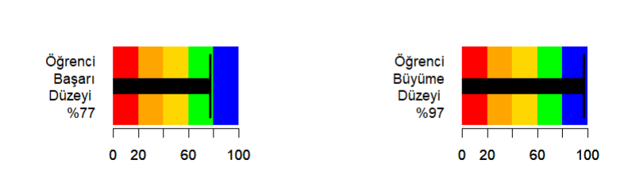

Eğitimde Geri Bildirim: Biçimlendirici Değerlendirmenin Gücü
Hacettepe Üniversitesi
📌 İçerik
- Bireysel farklılıklar
- Biçimlendirici değerlendirme
- Geri bildirimin tanımı ve önemi
- Etkili geri bildirimin temel ilkeleri
- Geri bildirim türleri
- Pratik örnekler ve uygulamalar
Bireysel Farklılıklar
Birey’ kavramı günümüzün etkileşimlerini yönetiyor.
Kişiselleştirme artık yalnızca sunulmuyor, aynı zamanda tüketici hizmetlerinin çoğunluğunun bir parçası olarak bekleniyor
Eğitimde durum neden farklı olsun?
Kişiselleştirilmiş deneyim kavramı her yerde.
Bireysel Farklılıklar
- Modern çağda herşey kişiselleşiyor. Kişiselleştirme modern çağın bir olanağı ve parçası: müzikten reklamlara, filmlere kadar.

Netflix önerilerinden Spotify’daki keşif çalma listelerine kadar, teknoloji dünyası, yeni bilgileri kendi özel zevklerine göre uyarladığınızda insanların daha iyi tepki verdiğini (bağımlılaştırdığını) fark etti.
Bu, dijital pazarlama dünyasında yıllardır kullanılan bir yöntem ancak eğitimde potansiyeli henüz fark ediliyor.
Eğitimin Bireyselleşmesi
Daha önce hiç olmadığı kadar fazla kişisel verinin mevcut olmasıyla, eğitimcilerin öğrencileri için daha kişiselleştirilmiş öğrenme katılımı stilleri geliştirmeleri artık mümkün.
Aslında, konuya özgü yazılımların her öğrencinin profiline uyarlandığı kişiselleştirilmiş öğrenme kavramı batıdaki okullar yaygınlaşıyor.
Okullarda bireye doğru kayma nasıl benimsenebilir ve öğrenciler için kişiselleştirilmiş bir deneyim yaratmanın ne gibi faydaları olabilir?
🤠Biçimlendirici Değerlendirme
Biçimlendirici değerlendirme, öğretme ve öğrenmeyi geliştirmek için öğrenci öğrenmesi hakkında bilgi toplamaya yönelik devam eden bir süreçtir.
- Öğrenme süreci sırasında ortaya çıkar.
- Öğretmenlere ve öğrencilere geri bildirim sağlar.
- Öğretimi, öğrenci ihtiyaçlarını karşılayacak şekilde uyarlamak için kullanılır.
- Sadece ölçmeyi değil, öğrenmeyi geliştirmeyi amaçlar.

📈 Biçimlendirici Değerlendirmenin Uygulanması
- Seyrek uzun testler yerine sık kısa testler kullanma
- Yeni öğrenilenleri bir hafta içinde test etme
- Test maddelerinin kalitesine dikkat etme
- Gelişimi izlemek için açıklamalı portfolyolar kullanma
- Ödevi biçimlendirici değerlendirme amacı ile kullanma
🔄 Geri Bildirim
Geri bildirim, öğrencilere performansları veya anlayışları hakkında sağlanan bilgidir.
- Hata yapmanın öğrenmeyi geliştirmede temel bir nokta olduğu kabul edilmektedir.
- Yanlış anlamaların ve kavram yanılgılarının nerede meydana geldiğine dair geri bildirim, öğrencilerin başarıya ulaşmalarına, daha öz-denetimli olmalarına ve görevleri tamamlama ve hedeflere ulaşma yeteneklerine inanmalarına yardımcı olur.
- Geri bildirim sadece not amaçlı kullanılmamalıdır!
- Öğrenme sırasında sık sık verilen yorumlar, sorular ve tartışma gibi çoklu geri bildirim biçimleri, katılımı ve başarılı olma motivasyonunu teşvik eder.
⚡ Geri bildirim kendi başına yeterli değildir!
Tüm öğrenciler bireylerdir ve farklı öğrenme stilleri, güçlü yanları, zayıflıkları ve ilgi alanları vardır.
Bunları anlamak ve geri bildirimi bu farklılıklara uyum sağlayacak şekilde düzenlemek, öğrencilerin en iyi şekilde öğrenmelerini ve performans göstermelerini sağlamanın çok daha etkili bir yoludur.
Geri bildirimin temel stratejisini bireylere uyarlamanın sonuçları önemli ölçüde artırdığı bilinmektedir.
☑️ Düzeyleri
- Hattie ve Timperley (2007) modeline göre geri bildirim dört düzeyde sunulabilir:
- Göreve ilişkin geri bildirim: Öğrencinin yanıtlarının doğruluğu veya yanlışlığı belirtilir.
- Görevin sürecine yönelik geri bildirim: Kullanılan yöntem ve stratejilere ilişkin yorumları içerir.
- Öz-düzenlemeye yönelik geri bildirim: Öğrencinin öğrenme sürecine aktif katılımını desteklemeye yönelik öz güveni artırmaktır.
- Kişisel olarak öğrenciye yönelik geri bildirim: Öğrencinin kişisel özelliklerine odaklanır ve duygusal bir yaklaşım sergiler.
- Bu model, geri bildirimin öğrenme sürecinde bir rehberlik aracı olduğunu vurgular
🆠Geri Bildirimin Öğrenme Sürecindeki Aşamaları
Etkili geri bildirim, öğrenciyi başarı kriterlerini karşılama yolunda kaydettiği ilerleme hakkında bilgilendirir.
Geri bildirim, biçimlendirici değerlendirmenin temelidir ancak her geri bildirim etkili değildir.
Besleme (feed-up): Nereye gidiyorum (öğrenme amaçlarım neler?)
Geri bildirim (feed-back): Nasıl gidiyorum (kanıtlar bana ne söylüyor?)
İleri besleme (feed-forward): Bundan sonra nereye (daha iyi ilerleme kaydetmek için hangi öğrenme faaliyetlerini yapmalıyım?)
📠Etkili Geri Bildirim
Zamanlaması, miktarı, formatı ve hitap ettiği gruba göre düzenlenmesi önemlidir.
Açık, net, yapıcı ve zamanında olmalıdır.
Bilişsel mekanizmaları aktive edecek geri bildirimler oluşturulmalıdır.
Gelecek performansı geliştirmek için öneriler içermelidir.
Öğrenci performansı için açık kriterlere dayanmalıdır.
Öğrencilere öğrenmeyi öğrenme becerileri kazandırmalıdır.
✒️Etkili Geri Bildirim
Sadece öğrencilerin hatalarını düzeltmemeli, aktif olarak çalışmalarını yeniden gözden geçirmelerini sağlamaldır.
Geri bildirimde öğrencinin duygusal durumunu gözetilmelidir.
Öğrencilerin özerkliğini artırır.
Öz-değerlendirme becerilerini geliştirir.
Kendi öğrenme süreçlerini yönetmelerine yardımcı olur.
📋 Etkili Geri Bildirim
öğretmenden, akrandan ve öğrenciden öğrenciye doğru verilebilir.
ve ya öğrencilerden öğretmenlere doğru verilebilir.
öğrencinin sadece görevi tamamlama faaliyeti değil, görevle ilgili öğrenme hakkında düşünmesini sağlar.
aile katılımını artırır.
Geri Bildirim Diyalogları
ğŸ Senaryo 1: Bir öğrencinin yazılı ödevi
Öğretmen Geri Bildirimi:
💠💬 “Bu çalışmanda çok çaba harcadığın belli. Bu kısmı çok iyi olmuş, ancak şurayı geliştirirsen daha iyi olabilir.”
💠💬 “Başka nasıl bir yol denemeyi düşünüyorsun?”
📌 Rubrik Örneği
📊 Öğrenci Çalışmalarını Değerlendirme Rubriği
| Kriter | Mükemmel (5) | İyi (4) | Orta (3) | Geliştirilmeli (2) | Yetersiz (1) |
|---|---|---|---|---|---|
| İçerik Kalitesi | 🔵 | 🟠| 🟢 | 🟡 | 🟠|
| Yazım Kuralları | 🔵 | 🟠| 🟢 | 🟡 | 🟠|
| Yaratıcılık ve Özgünlük | 🔵 | 🟠| 🟢 | 🟡 | 🟠|
ğŸ Senaryo 2: Sözlü sunum değerlendirmesi
Öğretmen Geri Bildirimi: 💠💬 “Ses tonun çok etkileyiciydi. Sunumun bu kısmı da çok güçlü. Ancak, biraz daha görsel ekleyerek sunumunu destekleyebilirsin.”
Gelişim İzleme
Araçlar
- 🔗 Kahoot
- Eğlenceli quizler oluşturma ve değerlendirme.
- Anında geri bildirim sağlar.
- Oyunlaştırma sayesinde motivasyonu artırır.
- 🔗 Forms
- Hızlı testler, anketler ve geri bildirim formları.
- Otomatik notlandırma özelliğiyle değerlendirme sürecini kolaylaştırır.
🔗 Plickers
Öğrencilerden hızlıca geri bildirim toplamak için QR kod tabanlı bir araçtır.
Öğrencilerin cihazlara ihtiyacı yoktur; öğretmenin bir telefon veya tableti yeterlidir.
📚 Biçimlendirici Değerlendirme ve Geri Bildirimin Faydaları
- Öğrenci başarısında iyileşme
- Artan öğrenci katılımı ve motivasyonu
- Öz-düzenleyici öğrenme becerilerinin geliştirilmesi
- Farklı öğrenciler için daha eşitlikçi sonuçlar
- Öğrenci öğrenimi hakkında sürekli bilgi yoluyla geliştirilmiş öğretim uygulamaları
Kişiselleştirilmiş geri bildiriminin temel faydaları
Öğrencilere çalışmalarını nasıl geliştirebilecekleri konusunda daha iyi bir anlayış kazandırır:
- Her bireyin kendi ihtiyaç alanlarına yönelik geri bildirimler, nasıl gelişebileceklerini daha kolay kavramalarına yardımcı olabilir.
🌟 Kişiselleştirilmiş geri bildiriminin temel faydaları
Hedeflenen geri bildirim daha fazla güven verir:
- Öğrenciler ve öğretmenler ilk çalışmadan son çalışmaya kadar geri bildirim ilerlemesini görebilir ve böylece genel iyileştirmeyi takdir edebilirler.
🯠Kişiselleştirilmiş geri bildiriminin temel faydaları
Öğrenciler ve öğretmenler arasında güven ve güçlü bir ilişki yaratır:
- Birey olarak görülmek, öğrencilerin öğretmenleriyle ilişki kurmalarına yardımcı olur ve tatmin edici bir çalışma ilişkisi yaratır.
👥 Kişiselleştirilmiş geri bildiriminin temel faydaları
Öğrencilere geri bildirim sağlamak, eğitmenlerin derste varlık göstermelerini ve etkileşim için doğal bir kanal oluşturmalarını sağlar.
- Geri bildirim ayrıca eğitmenlerin öğrencilerin materyali anlamalarını takip etmelerinin ve öğrenme sürecini yönlendirmelerine yardımcı olmalarının bir yoludur.
📈 Çalışmalar
Black ve Wiliam’ın (1998) ufuk açıcı incelemesi, biçimlendirici değerlendirme uygulamalarının 0,4 ila 0,7 arasında etki büyüklükleriyle önemli öğrenme kazanımları sağlayabileceğini ortaya koymuştur. Bu etkiler özellikle düşük başarılı öğrenciler için belirgindir.
Referans olması açısından, 0,4 ila 0,7’lik “etki büyüklüğü†orta ila güçlü olarak kabul edilir. Başka bir deyişle, bu bir öğrenciyi 25. yüzdelik dilimden 50. yüzdelik dilime taşımaya eşdeğerdir.
🚫 Kaçınılması Gereken Geribildirim Tuzakları
Ayrıca, öğretmenler ve öğrenciler arasındaki güç dinamikleri, geri bildirimin nasıl alındığını etkileyebilir.
- Yetkili olarak algılanan veya olumsuz eleştirilerde bulunan eğitmenler öğrencilerin motivasyonunu düşürebilir (McConlogue, 2020).
🚀 Geri Bildirimde Teknoloji Kullanımı
Çevrimiçi ve harmanlanmış öğrenmenin yaygınlaşması, biçimlendirici değerlendirme için hem zorluklar hem de fırsatlar yaratmıştır. Önemli hususlar şunlardır:
- Anında geri bildirim için teknolojiden yararlanma
- Otantik, etkileşimli değerlendirmeler tasarlama
- Çevrimiçi akran ve öz değerlendirmenin teşvik edilmesi
- Akademik dürüstlüğün korunması
- Öğrenme analitiğinden yararlanma
🯠Eğitimde Yapay Zeka Destekli Geri Bildirim Araçları
- Gradescope
- Yapay zeka destekli notlandırma
- Rubrik tabanlı geri bildirim
- El yazısı tanıma
- Turnitin
- İntihal tespiti
- Yapay zeka destekli yazma geri bildirimi
- Otomatik dilbilgisi denetimi
- Grammarly
- Yapay zeka destekli yazı asistanı
- Dilbilgisi ve stil önerileri
- Kelime dağarcığı geliştirme
🤖 Geri Bildirimde Teknoloji Kullanımı
Öğrencilerin performansları hakkında bireyselleştirilmiş ve anında geri bildirim sağlamak, özellikle büyük sınıflarda öğretmenler için zaman alıcıdır.
Geleneksel öğretmen geribildiriminin bu dezavantajları öğrencilerin potansiyel performanslarını engellemekte ve öğretmenlerin aşırı iş yükü nedeniyle tükenmiş hissetmelerine yol açmaktadır.
Çalışmalar
Dönmez (2024), eğitimde yapay zeka tabanlı geri bildirim araçları üzerine 2007’den 2024’e kadar yapılan 239 araştırmayı incelmiştir.
- Çalışmada, yayınların özellikle 2019 yılından itibaren artış gösterdiği belirlenmiştir.
- En fazla yayın yapılan ülkeler arasında Çin, ABD, Birleşik Krallık, Avustralya ve Kanada öne çıkmaktadır.
- Ayrıca, ChatGPT, büyük dil modelleri (large language models) ve etik konuların bu alanda ortaya çıkan yeni ve önemli araştırma konuları olduğu vurgulanmıştır.
💡 ChatGPT Destekli Geri Bildirim
Dai vd. (2023) ChatGPT’nin geri bildirim sağlama yeteneğini değerlendirmek amacıyla yaptıkları çalışmada
ChatGPT, insan eğitmenlerden daha akıcı ve tutarlı geri bildirim ürettiğini
Öğretmenlerle yüksek uyum gösterdiğini
Öğrenci gelişimine katkı gösterdiğini bulmuşlardır.
🌠ChatGPT Destekli Geri Bildirim
Steiss vd. (2024) ChatGPT’nin biçimlendirici geri bildirim sağlama kalitesi ile insan geri bildirimleri ile net talimatlar, doğruluk, önceliklendirme, destekleyici ton kriterlerine göre karşılaştırımışlardır.
- İyi eğitimli değerlendiricilerin, ChatGPT’den daha yüksek kaliteli geri bildirim sağladığını
- ChatGPT, eğitimci eksikliği olan durumlarda etkili bir araç olarak öne çıkabileceğini belirtmişlerdir.
Zorluklar ve Dikkat Edilmesi Gerekenler
Yapay zeka tabanlı geri bildirim araçlarının eğitimdeki potansiyel faydalarına rağmen, entegrasyon sürecinde önemli zorluklar bulunmaktadır.
Bu araçların ürettiği geri bildirimin geçerliği ve güvenilirliği sağlanmalı, önyargı ve hata riskleri dikkatle ele alınmalıdır.
Öğrenci verilerinin toplanması, gizlilik ve veri koruma endişelerini artırmakta, bu nedenle şeffaflık ve veri anonimleştirme protokolleri gibi önlemler uygulanmalıdır.
🕹️ Zorluklar ve Dikkat Edilmesi Gerekenler
- Eğitimciler ve politika yapıcılar, bu etik ve teknik zorlukların üstesinden gelerek yapay zekanın eğitimdeki potansiyelini en iyi şekilde kullanırken, öğrencilerin haklarını ve çıkarlarını korumaya yönelik sağlam güvenceler oluşturmalıdır.
💪 Zorluklar ve Dikkat Edilmesi Gerekenler
- Zaman ve kaynak kısıtlamaları
- Mesleki gelişim ihtiyacı
- Biçimlendirici ve özetleyici değerlendirmenin dengelenmesi
- Güvenirlik ve geçerliğin korunması
- Geri bildirim ile öğrenci katılımı
- Eşitlik ve erişilebilirlik kaygıları
🕒 Biçimlendirici Değerlendirme için En İyi Uygulamalar
Araştırmadan yola çıkarak, etkili biçimlendirici değerlendirme için bazı temel öneriler şunlardır:
- Öğrenme hedeflerini ve başarı kriterlerini netleştirin
- Öğrencilerin anladıklarına dair kanıtları sık sık ortaya çıkarın
- Spesifik, eyleme geçirilebilir geri bildirim sağlayın
- Öğrencileri birbirleri için öğrenme kaynakları olarak etkinleştirin (akran değerlendirmesi)
- Öğrencilerin öğrenmeyi sahiplenmesini teşvik edin
- Öğretimi uyarlamak için değerlendirme bilgilerini kullanma
Sonuç ve Öneriler:
- Biçimlendirici değerlendirme ve geri bildirim güçlü araçlardır.
- Şunları önemli ölçüde artırabilir:
- Öğrenci başarısı
- Katılım
- Öz düzenleme
- Uygulamaları çevrimiçi ortamlara uyarlamak çok önemlidir.
- Bilinçli tasarımla daha etkili öğrenme deneyimleri teşvik edilebilir.
💬 Bizi Dinlediğiniz İçin Teşekkürler! 🙏
📧 İletişim Bilgilerimiz:
- Prof. Dr. Nuri Doğan: nurid@hacettepe.edu.tr
- Doç. Dr. Kübra Atalay Kabasakal: katalay@hacettepe.edu.tr
✨ 🙌 🎉
Referanslar
Black, P., & Wiliam, D. (1998). Assessment and classroom learning. Assessment in Education: Principles, Policy & Practice, 5(1), 7-74.
Butler, D.L. and P.H. Winne (1995), “Feedback and Self-regulated Learning: A Theoretical Synthesis”, Review of Educational Research, 65(3), 245-281.
Dai, W. et al., (2023). Can Large Language Models Provide Feedback to Students? A Case Study on ChatGPT, Proceedings of the 23rd IEEE International Conference on Advanced Learning Technologies (ICALT 2023).
Donmez, M. (2024b). AI-based feedback tools in education: a comprehensive bibliometric analysis study. International Journal of Assessment Tools in Education, 11(4), 622–646. https://doi.org/10.21449/ijate.1467476
Referanslar
Espinoza, V. D., Serón, F. R., Vargas, J. P., Petric, D., Jaras, I. M., Peña, F. S., Valenzuela, N. O., Villagrán, I., Cohen, J. V., & Fuentes-Cimma, J. (2024). Available assessment tools for evaluating feedback quality: a scoping review oriented to education in digital media. Global Surgical Education - Journal of the Association for Surgical Education, 3(1). https://doi.org/10.1007/s44186-024-00239-4
Langer P. (2011). The use of feedback in education: a complex instructional strategy. Psychological reports, 109(3), 775–784. https://doi.org/10.2466/11.PR0.109.6.775-784
Hattie, J., & Timperley, H. (2007). The power of feedback. Review of Educational Research, 77(1), 81–112. https://doi.org/10.3102/003465430298487
Referanslar
Steiss, J., Tate, T., Graham, S., Cruz, J., Hebert, M., Wang, J., Moon, Y., Tseng, W., Warschauer, M., & Olson, C. B. (2024). Comparing the quality of human and ChatGPT feedback of students’ writing. Learning and Instruction, 91, 101894. https://doi.org/10.1016/j.learninstruc.2024.101894
Tam, A. C. F. (2024). Interacting with ChatGPT for internal feedback and factors affecting feedback quality. Assessment ve Evaluation in Higher Education, 1-17. https://doi.org/10.1080/02602938.2024.2374485
Wang, L., Chen, X., Wang, C., Xu, L., Shadiev, R., ve Li, Y. (2024). ChatGPT’s capabilities in providing feedback on undergraduate students’ argumentation: A case study. Thinking Skills and Creativity, 51, 101440. https://doi.org/10.1016/j.tsc.2023.101440
Wisniewski, B., Zierer, K., & Hattie, J. (2020b). The Power of Feedback Revisited: A Meta-Analysis of Educational Feedback Research. Frontiers in Psychology, 10. https://doi.org/10.3389/fpsyg.2019.03087
Referanslar
- Espinoza, P., & Genna, G. M. (2021). Hi, I want to talk to you about your progress: A large course intervention for at-risk college students. Journal of College Student Retention: Research, Theory & Practice, 23(1), 2-27. https://doi.org/10.1177/1521025118790054
- Ganapathy, M., Tan, D. A. L., & Phan, J. (2020). Students’ perceptions of teachers’ written corrective feedback in the Malaysian ESL classroom. Malaysian Journal of Learning and Instruction, 17(2), 103-136.
- Lim, L., Dawson, S., Gašević, D., Joksimović, S., Pardo, A., Fudge, A., &Gentili, S. (2021). Students’ perceptions of, and emotional responses to, personalised learning analytics-based feedback: an exploratory study of four courses. Assessment & Evaluation in Higher Education, 46(3), 339-359. https://doi.org/10.1080/02602938.2020.1782831
- McConlogue, T. (2020). Giving good quality feedback. In Assessment and Feedback in Higher Education: A Guide for Teachers (pp.118-134). UCL Press. https://doi.org/10.2307/j.ctv13xprqb.2
- Wang, H., & Lehman, J. D. (2021). Using achievement goal-based personalized motivational feedback to enhance online learning. Educational Technology Research and Development, 69, 553-581. https://doi-org.libproxy.library.unt.edu/10.1007/s11423-021-09940-3
- Yilmaz, F. G. K., & Yilmaz, R. (2020). Student opinions about personalized recommendation and feedback based on learning analytics. Technology, Knowledge and Learning, 25, 753-768. https://doi.org/10.1007/s10758-020-09460-8
Doç.Dr.Kübra Atalay Kabasakal